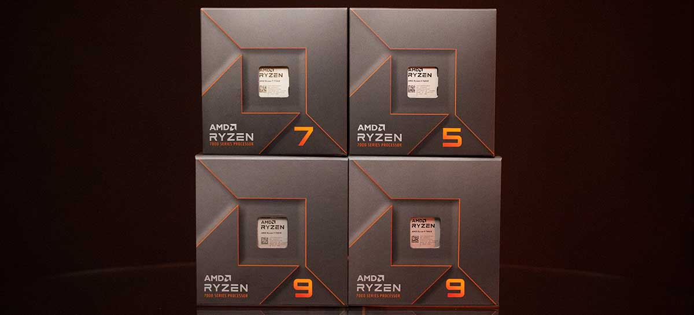
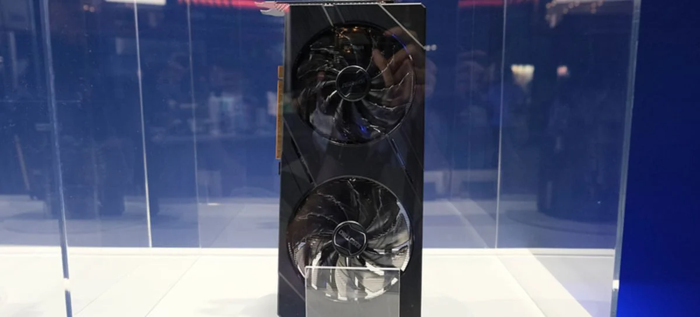

postado em 14/09/2022
A AMD fez o anúncio de lançamento dos primeiros produtos da família Ryzen 7000 para desktop, codinome Raphael, em um evento para a imprensa e transmitido online em seu canal do YouTube. Entre os principais destaques da geração estão o novo processo de fabricação de 5nm FinFET, o primeiro em um CPU para desktop, além de saltos de performance combinados com maior eficiência energética. Além dos processadores, também foram dados mais detalhes nas mainboards AM5 para esses modelos, bem como um novo padrão de auto-overclock de memórias RAM, o AMD EXPO.
Matéria completa no Adrenalinepostado em 14/09/2022
As placas de vídeo Intel Arc já estão em produção pelas fabricantes parceiras. Além da Arc A380, que já conta com alguns modelos, a A750 da ASRock está em exposição na Tokyo Game Show. Apesar de ainda não existir nenhum anúncio oficial, as placas vão aparecendo aos poucos.
Matéria completa no AdrenalineTodos os direitos reservados.